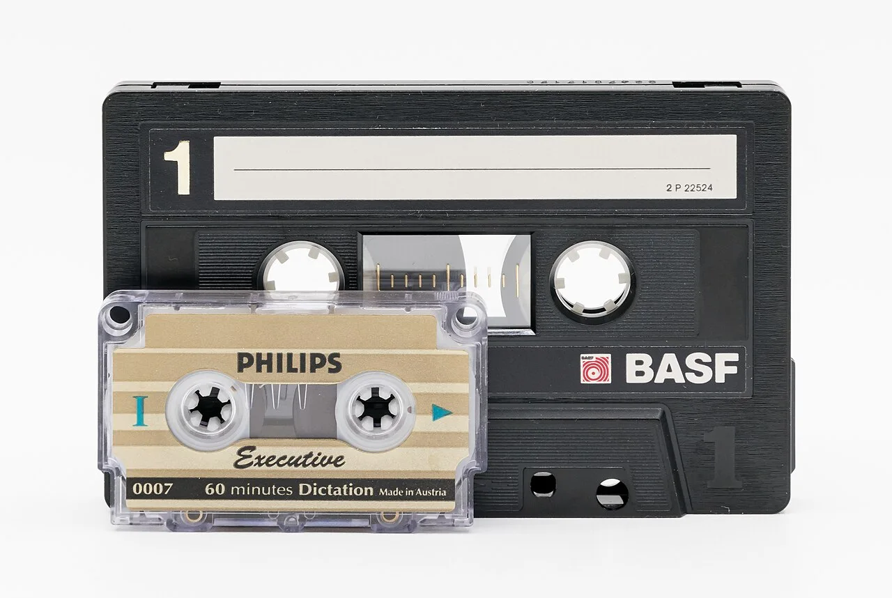

Lo Ke Keda combinó diseño en computador y formato fotocopiado. El dato, recogido en la selección de Hazlo Tú Mismx sobre el punk del Valle de Aburrá, complica una imagen demasiado fácil del fanzine: letras recortadas, pegamento y rechazo de cualquier herramienta digital. En 1998, una publicación podía usar el computador y seguir necesitando una circulación artesanal. La autonomía no estaba definida por una sola apariencia. [1]
La colección identifica también Visión Rockera, con números publicados entre 1986 y 1988, y Subterráneo Medellín, asociado a Piedad Castro y Olimpo Ordóñez. Más que construir una lista de pioneros, esos registros permiten distinguir proyectos, editores y momentos. Hablar del fanzine punk como si fuera un objeto único borra diferencias entre propuestas musicales, políticas y gráficas. [1]
En una publicación fotocopiada, el contraste tiene una consecuencia material inmediata. Una zona gris puede perder información al volver a reproducirse; una letra pequeña necesita conservar un borde legible. La técnica introduce un problema editorial: decidir qué detalle merece permanecer y cuánto puede comprimirse una página antes de hacerla difícil de leer. Esa tensión puede producir una forma intensa sin depender de una ornamentación deliberadamente sucia.


El número de hojas también organiza la experiencia. Añadir una página cambia impresión, plegado y transporte; una doble página pide pensar qué quedará enfrentado al abrirse. No sabemos aquí cómo presupuestó cada editor. Sí podemos reconocer que una decisión gráfica participa en una cadena de operaciones que debe poder realizarse con los recursos disponibles.
La investigación de Blanco Hincapié sobre el período 1980–1995 trabaja con fanzines, prensa, grabaciones y testimonios, entre otras fuentes. Su registro académico permite localizar un estudio de la producción y circulación del punk, en lugar de presentar el fenómeno únicamente como una respuesta visual a la violencia. Las publicaciones tienen relaciones y usos que requieren una investigación específica. [2]
Las imágenes aquí sirven para explicar una técnica, no para sustituir el archivo local: la fotocopiadora fue fotografiada en una biblioteca escolar de Estados Unidos y los casetes son referencias de formato. Los fanzines se consultan en el proyecto citado; no reproducimos páginas cuya autorización no está documentada. La diferencia protege el lugar de cada evidencia.
El intercambio merece tanta atención como la reproducción. Una edición corta puede llegar a personas que se conocen y abrir después contactos con otros lugares. Para comprender esa red no basta contar ejemplares: habría que registrar dónde se entregaban, qué materiales volvían a cambio y quién podía acceder a ellos. Una tirada reducida no equivale necesariamente a una influencia reducida dentro de un circuito.

.jpg){kind=link}
Al pasar a una colección digital, el impreso cambia otra vez. Se puede localizar por nombre y consultar lejos del lugar donde circuló, pero el archivo necesita conservar orden, fecha y procedencia. Si se escanea solamente la portada, se obtiene una imagen memorable y se pierde buena parte de la publicación. Los avisos, los créditos y las páginas menos espectaculares pueden revelar cómo se sostenía la red.
Hay además una diferencia entre conservar el fanzine y convertir su aspecto en una plantilla. Desgastar una tipografía o inclinar un titular no reproduce la capacidad de decidir qué publicar, hacerlo circular y responder por ello. El aporte de estos proyectos a una revista contemporánea comienza por la iniciativa editorial, no por simular las limitaciones de sus herramientas.
La investigación que sigue es pequeña y concreta: comparar números, seguir créditos y reconstruir recorridos de intercambio con quienes los hicieron circular. Ahí aparecen decisiones que una historia general del punk deja fuera. La fotocopia importaba porque ponía algo en manos de alguien; esa posibilidad explica más que una colección de portadas intensas.
Fuentes.
- Hazlo Tú Mismx — selección digital de fanzines de Medellín y el Valle de Aburrá
- Duban Alexis Blanco Hincapié — El Punk en Medellín: historia de un movimiento auto marginado, Universidad de Antioquia, 2019; registro de investigación
Lectura de descripciones documentales, sin entrevistas ni examen exhaustivo de todos los ejemplares. Las fotografías muestran una fotocopiadora en Estados Unidos y dos formatos de casete; no son equipos identificados de los editores de Medellín.
Fuentes consultadas el 15.11.2026. Análisis e interpretación: RUMMOR. Edición privada para revisión.